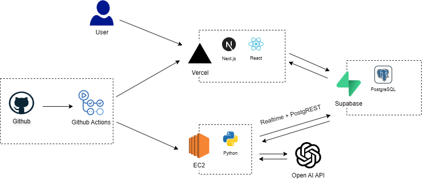
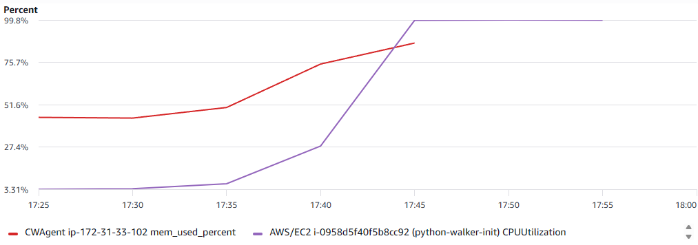

v1.0은 최대한 빠르게 구현하는 것을 목표로 설계했습니다.
이를 위해 Frontend와 DB에는 각각 Vercel과 Supabase를 사용하였습니다.
AI Worker는 사용자가 입력한 데이터를 처리해 OpenAI API를 호출하는 백그라운드 프로세스이므로, EC2에 별도로 배포하였습니다.
배포는 GithubActions를 사용하여 Vercel과 EC2에 자동으로 이루어지도록 구성하였습니다.

[이전 버전에서 어떤 한계가 있었고, 그래서 왜 이 방향을 택했는지.]
현재 아키텍처가 부하를 어느 정도 감당할 수 있는지 확인하고, 임계 구간과 한계 구간을 파악하고자 하였습니다. 이를 위해 지연율(avg, p95), 에러율, WebSocket 연결 끊김 발생 빈도, 리소스 사용량을 주요 지표로 삼았습니다. 기준을 정하기 위한 베이스라인 테스트를 수행하고, 이후 점진적 부하 테스트를 진행하였습니다.
실제 사용자의 사용 패턴을 반영하기 위해 위치 정보와 간단한 내용을 포함한 데이터를 생성하였습니다. 생성 후 상세 조회까지를 하나의 트랜잭션으로 간주하였습니다.
| 항목 | 고려 이유 |
|---|---|
| 비용 | 무료로 사용할 수 있는 도구 선호 |
| 러닝커브 | 초기 프로젝트인 만큼 빠르게 테스트를 구성할 수 있어야 함 |
| 지원 생태계 | 자료가 많고 참고하기 쉬운 도구 선호 |
코드 기반으로 시나리오를 관리할 수 있고, 별도의 실행 환경 구축 없이 빠르게 반복 실행할 수 있는 k6을 선택하였습니다.
단일 사용자가 사용한다는 가정 하에 기본 성능을 측정하였습니다.
동시 사용자 수(VUs)를 10 → 30 → 50 → 100으로 단계적으로 증가시키고, 각 단계에서 2~3분간 부하를 유지하도록 설계하였습니다.
실제로는 과도한 AI 사용을 방지하기 위해 사용자별 일일 AI 호출 횟수를 제한하고 있었습니다. 그러나 부하 테스트에서는 해당 제한으로 인해 시스템의 실제 한계를 확인하기 어려웠습니다. 따라서 테스트 환경에서는 해당 제한을 비활성화하여 시스템 자체의 실제 처리 성능을 측정할 수 있도록 하였습니다.
초기 테스트이므로 일반적인 운영 환경의 성능 저하 판단 기준을 참고하여 임계점과 한계점을 설정하였습니다.
| 회차 | avg (s) | p95 (s) | 에러율 |
|---|---|---|---|
| 1 | 2.35 | 3.10 | 0% |
| 2 | 1.36 | 1.86 | 0% |
| 3 | 1.41 | 1.95 | 0% |
| 4 | 1.56 | 1.71 | 0% |
| 5 | 1.62 | 1.78 | 0% |
| 6 | 0.83 | 0.83 | 0% |
| 7 | 1.14 | 1.44 | 0% |
| 8 | 0.84 | 0.85 | 0% |
| 9 | 1.36 | 1.86 | 0% |
| 10 | 1.29 | 1.73 | 0% |
| 평균 (2~10회) | 1.27 | 1.56 | 0% |
1회차는 Vercel cold start로 간주하여 제외하였습니다. 2~10회차 평균을 베이스라인으로 설정하였습니다.
| 지표 | 결과 |
|---|---|
| avg | 787ms 초기 베이스라인 테스트는 각 회차를 긴 간격으로 수행하여 Vercel Function의 Warm 상태를 유지하지 못했습니다. 이후 기록을 재검토하면서 베이스라인에 Cold Start의 영향이 일부 포함되었을 가능성을 확인했습니다. |
| p95 | 918ms |
| 에러율 | 0% |

80~100 VUs 구간에서 CPU 사용률이 99%에 도달하였습니다.
CPU 사용률이 급격히 상승하는 구간을 확인하였으며, 과부하 시점에 SSM 접속이 불가능한 현상이 발생하였습니다. 동일 시점부터 CloudWatch Agent를 통한 CPU 및 메모리 메트릭 수집도 중단되었습니다.
베이스라인 결과로부터 계산한 임계점과 한계점을 적용해 결과를 분석하였습니다.
AI 요청 처리는 단일 EC2 인스턴스의 단일 Worker가 수행하는 구조이므로 동시에 처리 가능한 작업 수에 한계가 존재합니다. 부하가 증가하여 요청 유입 속도가 Worker의 처리 속도를 초과하게 되면 처리 지연이 발생할 수 있으며, 실제 테스트에서도 일정 시점 이후 CPU 사용률이 급격히 상승하고 SSM 접속이 불가능한 현상이 발생하였습니다.
이에 따라 단일 Worker 구조의 처리 한계가 드러난 것으로 판단하였습니다. 또한 과부하 시점에는 CloudWatch Agent가 CPU 및 메모리 로그를 확보하지 못하게 되므로, 정확한 병목 분석에는 한계가 있다는 점도 확인하였습니다.
현재 구조에서는 AI 요청이 단일 Worker에 집중되어 병목이 발생하며, 일정 수준 이상의 부하에서 시스템이 안정적으로 동작하지 못하는 한계를 확인했습니다. 따라서 다음 버전에서는 요청을 안정적으로 처리할 수 있는 구조로 개선할 필요가 있다고 판단했습니다.
이를 위해 순간적으로 요청이 증가하더라도 요청을 안정적으로 수용하고, Worker가 순차적으로 처리할 수 있도록 하기 위해 Queue를 도입하는 방향으로 개선 방향을 결정하였습니다.